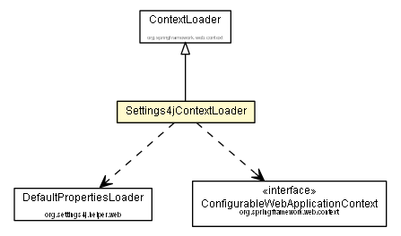

org.settings4j.helper.spring
Class Settings4jContextLoader

java.lang.Object
 org.springframework.web.context.ContextLoader
org.settings4j.helper.spring.Settings4jContextLoader
org.springframework.web.context.ContextLoader
org.settings4j.helper.spring.Settings4jContextLoader
public class Settings4jContextLoader
- extends org.springframework.web.context.ContextLoader
Spring Context Loader which can replaces Placeholders in contextConfigLocations like "${...}" with Values from
Settings4j.
This Implementation replaces the ContextLoader
See configuration Example: Settings4jContextLoaderListener.
- Author:
- brabenetz
|
Field Summary |
static String |
SETTINGS4J_CONFIG_LOCATION_PARAM
Name of servlet context parameter (i.e., "settings4jContextConfigLocation")
that can specify the config location for the root context, falling back
to the implementation's default otherwise. |
| Fields inherited from class org.springframework.web.context.ContextLoader |
CONFIG_LOCATION_PARAM, CONTEXT_CLASS_PARAM, CONTEXT_ID_PARAM, CONTEXT_INITIALIZER_CLASSES_PARAM, GLOBAL_INITIALIZER_CLASSES_PARAM, LOCATOR_FACTORY_KEY_PARAM, LOCATOR_FACTORY_SELECTOR_PARAM |
| Methods inherited from class org.springframework.web.context.ContextLoader |
closeWebApplicationContext, configureAndRefreshWebApplicationContext, createWebApplicationContext, createWebApplicationContext, determineContextClass, determineContextInitializerClasses, getCurrentWebApplicationContext, initWebApplicationContext, loadParentContext |
| Methods inherited from class java.lang.Object |
clone, equals, finalize, getClass, hashCode, notify, notifyAll, toString, wait, wait, wait |
SETTINGS4J_CONFIG_LOCATION_PARAM
public static final String SETTINGS4J_CONFIG_LOCATION_PARAM
- Name of servlet context parameter (i.e., "
settings4jContextConfigLocation")
that can specify the config location for the root context, falling back
to the implementation's default otherwise.
- See Also:
XmlWebApplicationContext.DEFAULT_CONFIG_LOCATION,
Constant Field Values
Settings4jContextLoader
public Settings4jContextLoader()
customizeContext
protected void customizeContext(javax.servlet.ServletContext servletContext,
org.springframework.web.context.ConfigurableWebApplicationContext wac)
-
- Overrides:
customizeContext in class org.springframework.web.context.ContextLoader
createDefaultPropertiesLoader
protected DefaultPropertiesLoader createDefaultPropertiesLoader()
- Create the DefaultPropertiesLoader to use. Can be overridden in subclasses.
- Returns:
- the new DefaultPropertiesLoader
Copyright © 2008–2014. All rights reserved.